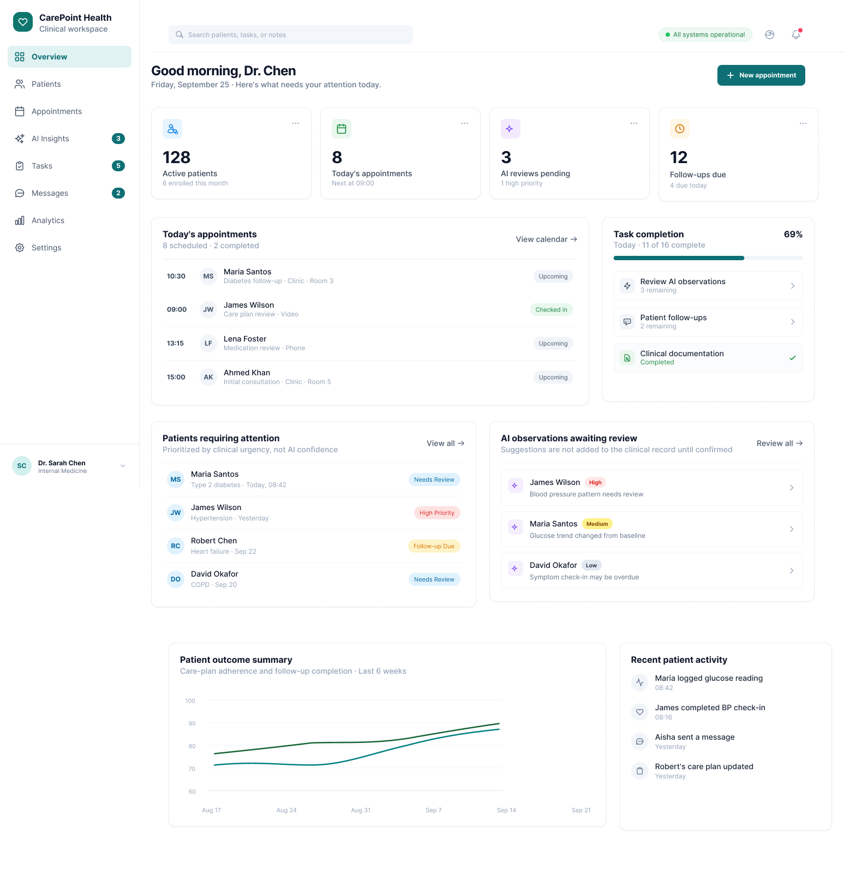
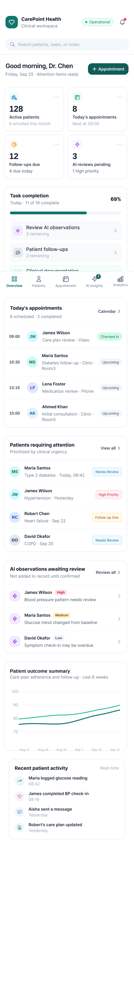

01
Workflow
Real-Time Patient Queue
An organized desktop view displaying active appointments, triage priorities, and patient check-ins to keep daily clinic schedules running smoothly.
An end-to-end product design exploration creating a high-efficiency healthcare management platform. It pairs a robust desktop dashboard for clinicians with seamless mobile views to streamline patient queues, electronic health records, and medical consultations.
Defining clinical software bottlenecks, efficiency opportunities, and platform boundaries.
Clinicians often struggle with convoluted hospital software and slow interfaces that create administrative friction, delaying patient chart reviews during active consultations.
There is an opportunity to design an intuitive, high-speed dashboard and mobile companion that simplifies patient scheduling, electronic health records, and prescription management.
How might we design a streamlined interface for doctors that minimizes administrative clicks and provides instant access to crucial patient data across devices?
The scope covers both the primary doctor's desktop dashboard for clinic management and the responsive mobile views for on-the-go care tracking and schedule updates.
Structuring layouts to prioritize zero-latency information retrieval during patient visits.
Doctors need immediate, glanceable awareness of waiting room queues, emergency walk-ins, and scheduled slots.
Past medical history, lab results, and previous prescriptions must be accessible within one or two clicks.
Seamless transition between desktop dashboard reviews in the clinic and mobile notifications on hospital rounds.
Real-time patient appointments and triage overview.
Structured medical history and test result logs.
Digital prescription writer and pharmacy order verification.
On-the-go schedule alerts and quick consultation summaries.
Core capabilities tailored to reduce administrative friction and enhance clinical focus.
An organized desktop view displaying active appointments, triage priorities, and patient check-ins to keep daily clinic schedules running smoothly.
Quick-access medical charts and history logs structured for rapid review during patient consultations without cognitive clutter.
A responsive mobile interface allowing clinicians to check schedules, review lab updates, and manage notifications on the move.
Streamlined tools for doctors to log diagnoses, issue digital prescriptions, and schedule follow-ups with minimal clicks.
Explore the desktop doctor's dashboard and the two side-by-side mobile companion views designed for Care in Figma. Scroll within each container to inspect the complete layouts.

Primary web interface for clinicians featuring real-time appointment queues, patient health summaries, and clinical analytics.

Primary web interface for patient health summaries and appointments.

Mobile chart review and consultation log interface.

On-the-go schedule and patient triage overview.
Through Care, I designed a streamlined ecosystem that bridges desktop clinical workflows and mobile accessibility, empowering doctors to focus more on patient care and less on administrative friction.